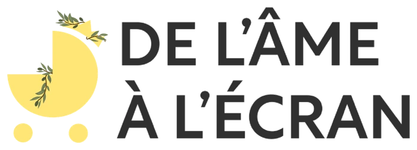
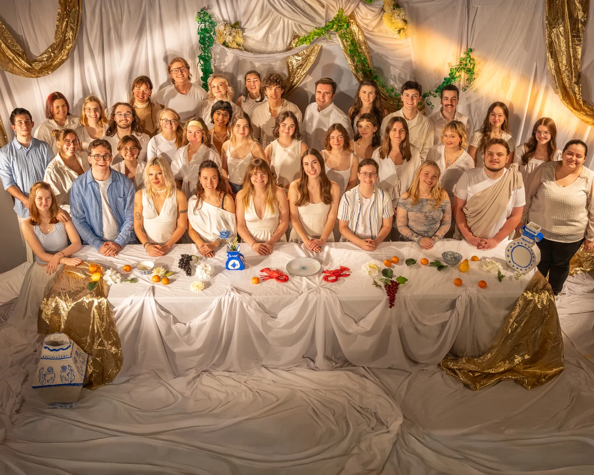
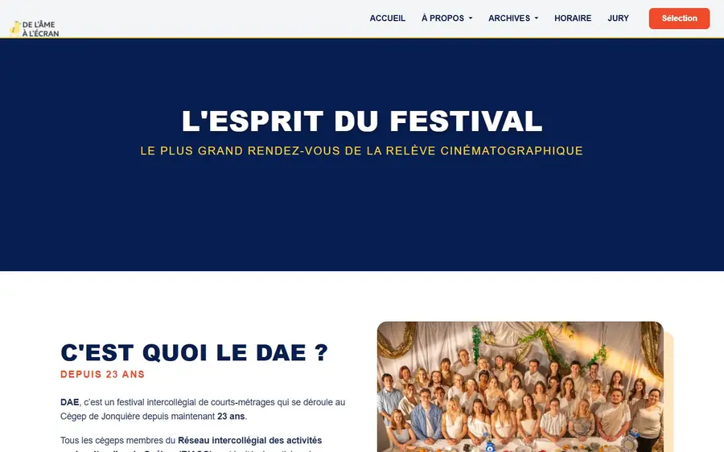
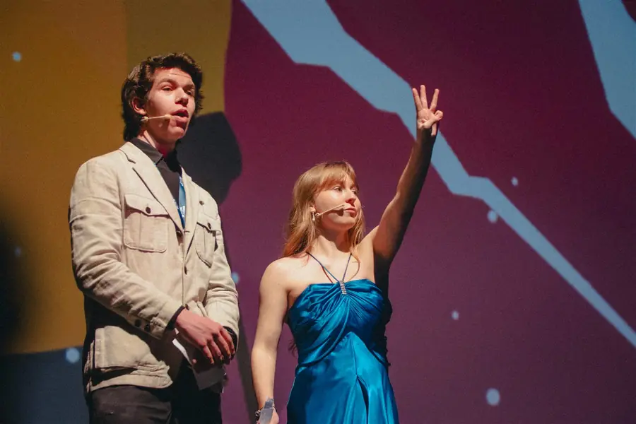
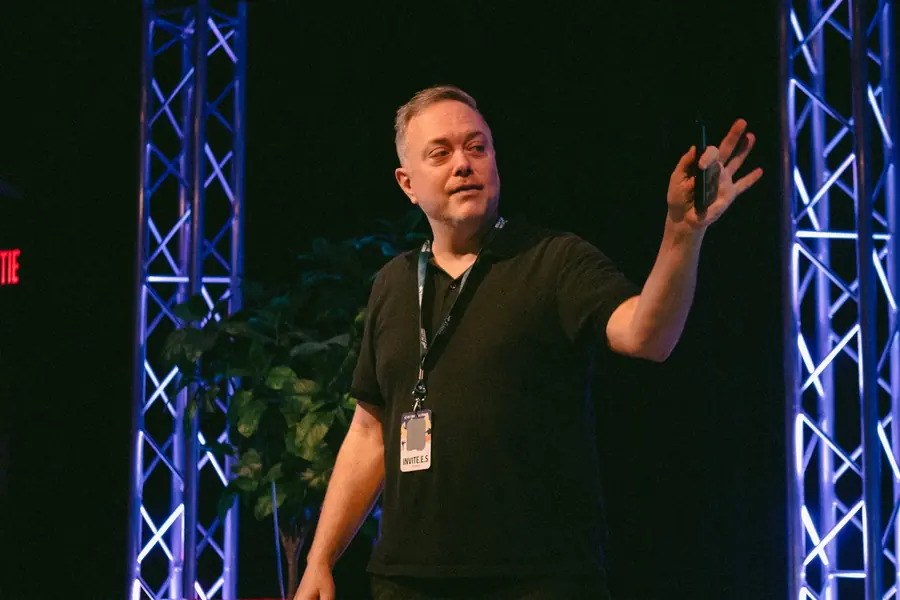

Projet vedette · Édition 2026 · Implication étudiante
Festival de l’Âme à l’Écran (DAE)
Un festival de films étudiants de trois jours, avec des films d’écoles de partout au Québec.
- Coordination
- Communication
Mon rôle
Webmaster et membre du comité de communication. Je m’occupais du site web. Aux rencontres du comité, j’aidais l’équipe sur le reste : affiches, réseaux sociaux (Instagram, TikTok) et communications d’urgence.
Outils
- Photoshop
- Illustrator
- TikTok
Côté coulisses
-
Brief
Faire connaître le festival sur affiche, sur les réseaux sociaux et sur le web, et prévoir les communications d’urgence.

Le logo du festival -
Plan
Une rencontre du comité de communication chaque semaine, pour coordonner les affiches, les réseaux sociaux, le web et les communications d’urgence.

L’équipe officielle du festival -
Production
Comme webmaster, je me suis occupé du contenu du site de l’édition 2026, puis j’ai commencé le thème de l’édition 2027 (voir projet 02). Aux rencontres du comité, j’ai prêté main-forte pour les affiches, les réseaux sociaux et les communications d’urgence.

Le site de l’édition 2026 : page À propos -
Résultat
Le festival a eu lieu : trois jours, une vingtaine de films venus d’écoles de partout au Québec, une vingtaine de bénévoles (les GO).

